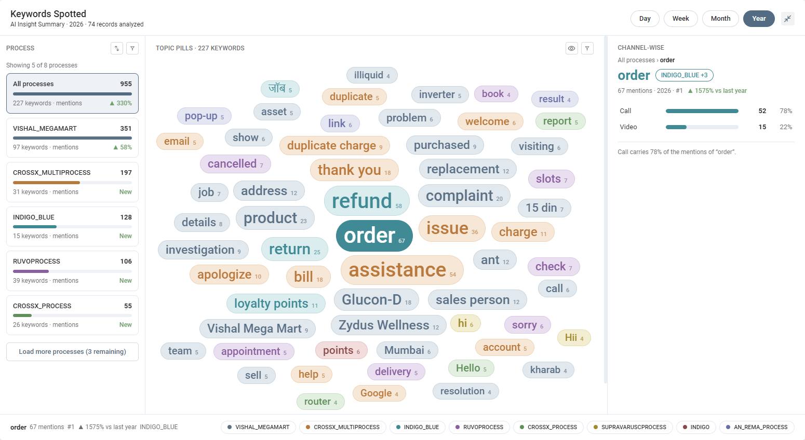
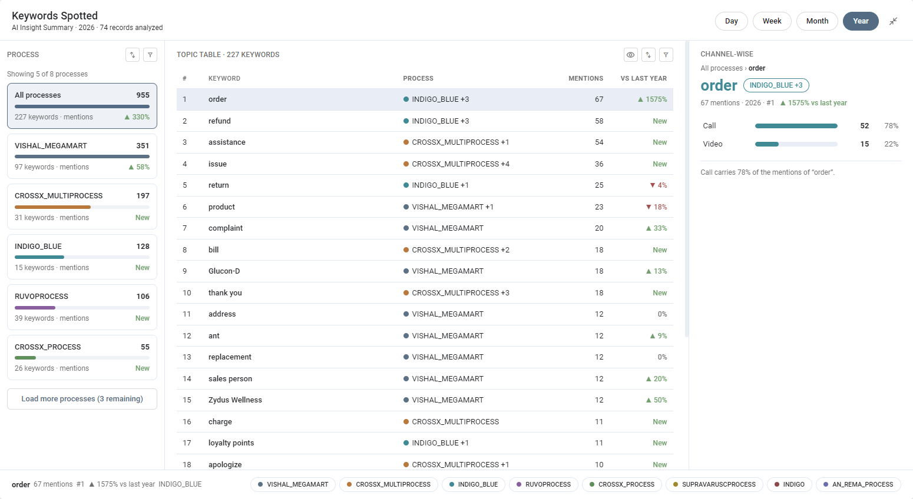
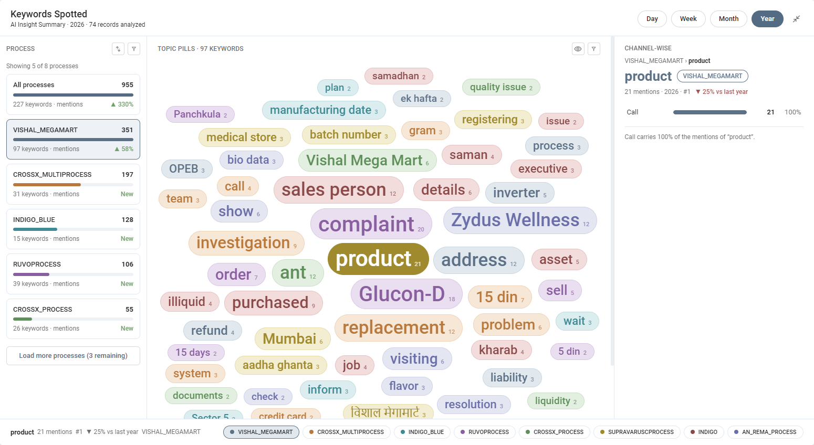
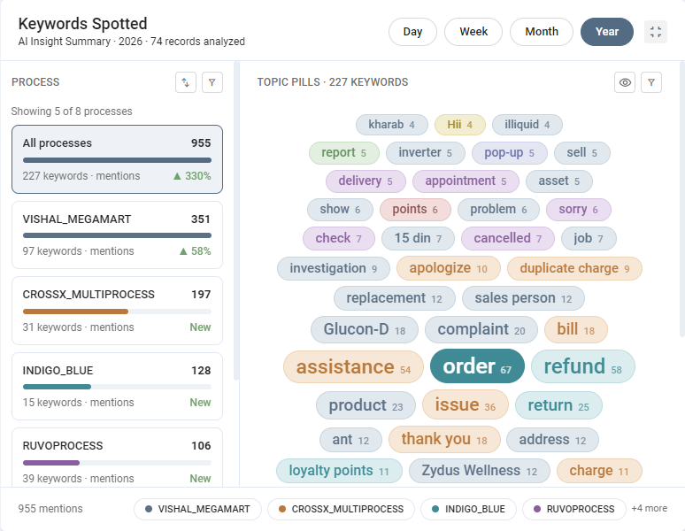
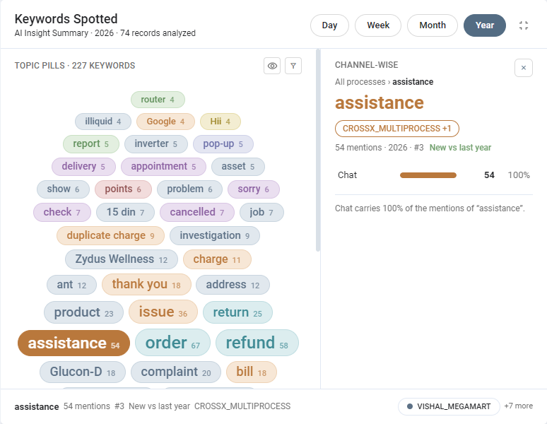

Keywords Spotted Widget
See which keywords come up most in your conversations — across all processes or one at a time, on every channel — and how that compares with the period before.
01
What this feature does
One place to see what customers talk about.
Every conversation that has AI Insights lists the keywords that were spotted in it, with how many times each came up. The Keywords Spotted widget gathers those counts for a period and shows them in three parts: the processes on the left, the keywords in the middle, and the channels one keyword came up on, on the right. The number of times a keyword came up is called its mentions.

02
Where to find it
It sits on the Dashboard.
Open the Dashboard (the first icon in the left bar) and scroll to Keywords Spotted. Like the other dashboard widgets it can be moved and resized, and it has a full-screen button at its top right corner. The line under the title tells you what you are looking at — AI Insight Summary · period · number of records analyzed. The records analyzed are the conversations of the period that have AI Insights.
03
Choose the period
Four quick choices.
| Button | Shows | Compared with |
|---|---|---|
| Day | Today | Yesterday |
| Week | The current week, Monday to Sunday | Last week |
| Month | The current month | Last month |
| Year | The current year | Last year |
The widget opens on Week. Choosing another button loads the keywords of that period again.
04
Pick a process
The left column.
The first card, All processes, adds up every process and is selected when the widget opens. Below it each process has a card with its total mentions, a bar, the number of different keywords, and how the mentions changed since the period before. Every process has its own colour, which you will see again on its keywords. Click a card to look at that process only. The first five are shown; click Load more processes for the rest.
- The sort icon orders the cards by Mentions or by Name.
- The funnel icon filters the cards by process name. A process the filter hides can no longer be selected, so the widget returns to All processes.
05
Look at the keywords
The middle column.
The heading tells you how many keywords there are for what you selected. The eye icon switches between two views:
- Pills — every keyword is a coloured pill. The more mentions a keyword has, the bigger its text. The most mentioned keyword sits in the middle and the others are laid out around it, so the keywords that matter most are the ones you see first. The pill also carries its mentions as a small number (1.6k stands for 1,602). The first 60 are shown; click Load more keywords for more.
- Table — one row for each keyword, with its rank #, the Keyword, its Process, its Mentions and the change vs the period before. The first 25 are shown. Here the sort icon orders the rows by Mentions or by Name.

The funnel icon filters the keywords by name. The colours help you read the pills:
- With All processes selected, a pill has the colour of the process the keyword was spotted in the most.
- With one process selected, the pills would all be the same colour, so they take a mix of colours instead. A keyword always keeps the same colour, whatever you filter or sort.

06
One keyword in detail
The right column.
Click a keyword, in either view, to see it on the right under Channel-wise. You see its name, the process it was spotted in the most (with +1, +2 … when it came up in other processes too — hover over it to see them all), and a line with its mentions, the period and its rank, for example 67 mentions · 2026 · #1, followed by its change since the period before.
- Channels — a bar for each channel the keyword came up on (call, chat, email or video), with the number of mentions and the share of the total.
- Open the records — click a channel to open the conversations behind that number in the records list, in a new tab.
- A short sentence under the bars tells you which channel carries most of the mentions, for example Call carries 78% of the mentions of “order”.
The bar at the bottom of the widget repeats the chosen keyword with its mentions, rank, change and process. When none is chosen it shows the total mentions instead. Next to it the processes are listed with their colours; click one to look at that process. When there are too many to fit, the rest are counted as +N more.
07
Compare with the period before
Up, down or new.
Wherever you see a change, it compares the period with the period of equal length right before it (see the table in Choose the period).
| You see | It means |
|---|---|
| ▲ with a percentage, in green | More mentions than in the period before |
| ▼ with a percentage, in red | Fewer mentions than in the period before |
| 0% | The same number of mentions |
| New | Nothing was spotted in the period before |
08
Using it in a smaller widget
Half a row, a small screen or a phone.
The widget arranges itself by its own width, so it works the same in a half-width cell as on a small screen. When it is wide enough (a full row or full screen) all three parts are shown together. In a narrower widget:
- The channel view stays hidden while the process list is shown.
- Click a keyword and the process list closes; the channel view opens beside the keywords.
- The × button on the channel view closes it and brings the process list back.
- In a very narrow widget the process list and the keywords are stacked one above the other.
The text of the pills also becomes smaller as the widget gets narrower, and they are laid out again to fit, so the keywords stay readable and nothing is cut off.


09
How the numbers are counted
So the numbers can be trusted.
- Only conversations that have AI Insights are counted. A conversation without them is left out, and is not part of the records analyzed.
- The keywords of a conversation are the ones listed as Keyword Spotted on its AI Insights, with how many times each came up. The keywords themselves come from the process’s keyword list — see Keywords and Aliases for how to add them.
- Mentions are the sum of those counts over all the conversations of the period. A process total, a keyword total and a channel total are all built the same way, so the channels of a keyword always add up to its mentions.
- A keyword spotted in more than one process is listed once under All processes, with its mentions added together; under a single process only that process’s mentions are counted.
- A keyword whose count is not above zero is not a mention and is left out.